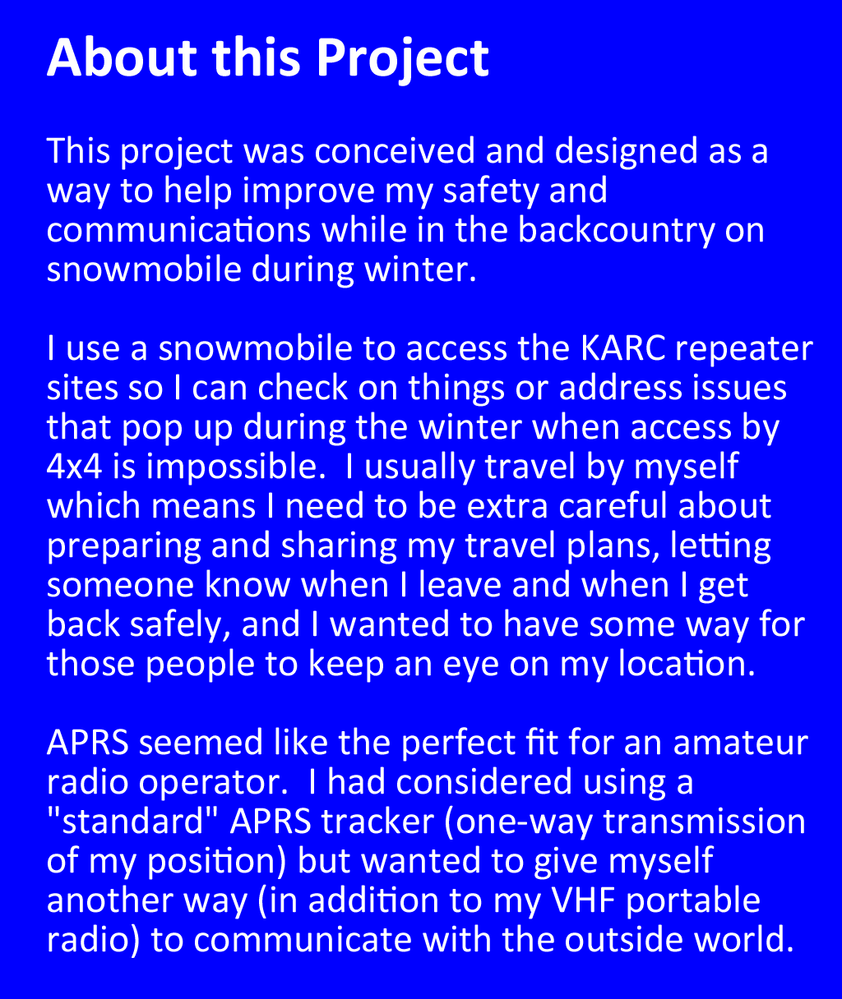
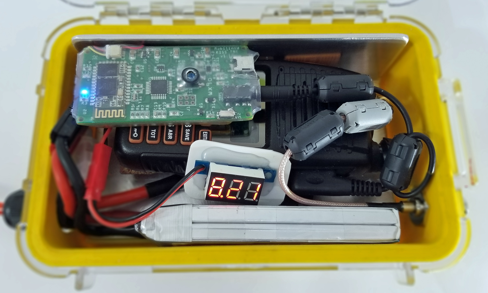
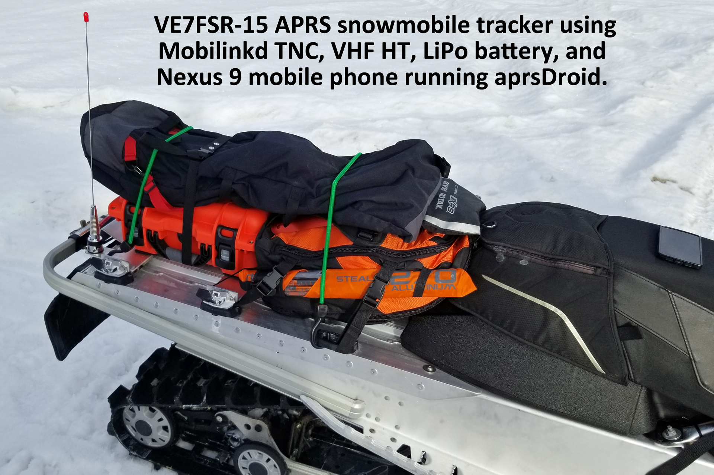

Project Corner: Building an APRS Tracker for a Snowmobile
Back to StoriesStory 687
Thu, 2022-02-10 18:40 — VE7FSR
By Myles Bruns, VE7FSR


The APRS-IS network is terrific -- it not only shows the geospatial location of amateur radio stations (for example, https://aprs.fi/VE7FSR-9 ), but it allows for messaging between those amateur radio stations over RF (on 144.390 MHz).
The APRS-IS also supports short messages to and from email (see http://www.aprs-is.net/email.aspx ) and short messages to and from SMS (e.g. mobile phone, see https://smsgte.org/ug-sending-messages/ for more info).
What this means is that the user of a "two-way" APRS tracker has the ability to send and receive messages to other ham radio operators on APRS, but also to non-hams such as family members through the email or SMS gateways.
This increases a person's safety net and ability to "stay in touch" -- and to call for help if needed.

Fortunately for me, in my pile of "ham radio and electronics junk" I had almost everything I needed to build a "two-way" APRS tracker which would allow me to send and receive short messages over APRS while out on the snowmobile alone.
It took a little thinking to figure out how to make this work on the snowmobile -- I didn't want to have something else (more weight) to carry in my pack -- and I wanted to use an efficient (and tough) antenna mounted to the snowmobile.
Some of the considerations that went into the design phase included: robustness, equipment temperature, waterproofness, efficiency, ease of use, and low cost .
As I mentioned above, I didn't want to add a bunch of weight to my pack, or have a whip antenna sticking out of the pack which would catch on tree limbs and break (or yank me off the sled!).
I wanted to make something that would keep the APRS equipment warm and dry, and keep it from getting damaged if I tipped over or crashed the snowmobile.
I didn't want to have to make too many modifications to the snowmobile, and I wanted an easy way to send and view my APRS messages.
APRS_tracker_radio 2.jpg APRS_tracker_LiPo Battery Pack.jpg Given that my snowmobile only produces 13.8vdc from the stator/magneto while the engine is running, and because the snowmobile battery has a relatively low capacity (~10-12Ah), I decided that the APRS tracker should have its own battery, which in my case meant a Li-Po 7.4v 2200 mAh "RC" style battery to power the Pofung GT-5 (an inexpensive handheld radio I acquired somewhere) I was going to use for the radio in the APRS tracker project.
This way even if the snowmobile battery was dead, I could still send and receive APRS messages.
One of the "issues" I discovered while bench testing is that the Pofung GT-5 is VERY slow to switch from transmit to receive, and very slow to recognize a signal and unsquelch -- even with power saving turned off in the radio options.
This slowness to detect a signal meant that the TNC was regularly missing packets.
To mitigate this issue I had to operate the GT-5 with open squelch, which put a higher current drain on the Li-Po battery.
I did some calculations and then some more real-world testing and determined that the 2200 mAh battery will reliably power the GT-5 on open squelch for approximately three days.
APRS_tracker_MobilinkTNC.jpg The TNC I used is a Mobilinkd , one of their original units (aka TNC v1), on which I replaced the stock Li-Po battery with a much larger capacity battery which would power the Mobilinkd TNC for several days.
The Mobilinkd battery is recharged through a micro-USB port on the circuit board.
The Mobilinkd Config App allows me to see the state of the battery charge and make configuration changes to the TNC.
APRS_tracker_ready for the pack.jpg I decided to house everything in a Pelican 1050 Micro case I had in the "junk" pile.
The radio, battery, and TNC all fit nicely in the case, and I used a small coax patch cable to go from the GT-5 radio's SMA connector to a panel-mount BNC connector mounted in a hole drilled through the Pelican case.
This allows me to quickly connect and disconnect the coax running to the antenna.
The Pelican case itself goes into my BRP seat bag on the snowmobile, which makes it easy to take it out when I get home, or easy to get to if I need to make any adjustments to the radio or check on things inside the case while out in the backcountry.
All the connections going into the case are sealed and watertight, as is the case itself, so no water or snow can get inside.
I also used some reflective-barrier closed-cell foam to insulate inside the bottom and top of the case.
APRS_tracker_case power lead.jpg I was concerned about the APRS tracker getting reallly cold (which might impact the radio but would certainly reduce battery life), so I wanted to provide a source of heat.
I didn't want to power the "heater" from the radio's battery, so I decided to power the "heater" from the snowmobile.
I added a switch to the dash so that I could turn on/off the "heater" power circuit so it was only heating when the snowmobile was running (and mitigating excess drain on the snowmobile battery).
I decided to make a "heat sink" from some scrap aluminum plate I had in the garage, which was cut and bent to fit tightly inside the Pelican case.
For the heat source I decided to use a resistor.
APRS_tracker_case heater.jpg At first I tried a really nice Arcol Planar 50W low-profile aluminum-cased 20-ohm resistor pack designed for use in electric cars, but at almost 15vdc (the max produced by the stator) the Pelican case got so hot inside I was worried about the Li-Po battery bursting into flames!
Maybe at -40C that 20-ohm resistor would have been OK, but at 0C during testing it was too hot.
So I settled on a Caddock thick film 50-ohm 50 watt resistor -- if I was operating in consistent -25C to -30C temperatures I might switch to a 40-ohm resistor for a bit more heat.
The Caddock resistor is bolted to the aluminum heat sink using thermal conductive paste, and I use a small piece of cork insulation between the resistor heat spreader and the GT-5 radio to keep the radio from getting too warm.
The antenna is a quarter-wave VHF spring-mounted mobile whip, and I used RG-400 double-shield coax which runs from the NMO mount inside a covered channel on the snowmobile tunnel, under the fuel tank, and then into the BRP seat bag.
The NMO mount allows me to quickly remove the antenna at the end of the day, screw on an NMO cap, and then put on my snowmobile cover for protection from road salt/sand while the sled is on the trailer.
Also running under the fuel tank and into the seat bag is the fused power lead for the tracker "heater".
Everything was routed and mounted to keep the wires and coax from snagging or getting damaged.
The spring-mounted antenna has stood up to a lot of abuse so far this year with no problems (yes, I tip over, fall off, and get stuck from time to time!).
APRS_tracker_Nexus 9 aprsDroid.jpg APRS_tracker_Nexus 9 Messaging.jpg The "brains" and "control panel" of the APRS tracker is an old Nexus 9 Android mobile phone (junk pile again) running aprsDroid software and the Mobilinkd Configuration App. aprsDroid connects to the Mobilinkd via Bluetooth, and I keep the phone in my goggle dash bag behind the windscreen for easy access.
The Bluetooth connection works so well that I can normally take the phone with me when I go inside the repeater building and still send and receive APRS messages.
The battery in the Nexus 9 isn't very APRS Tracker Power Outlet.jpg good and it doesn't do well in the cold, so I added a Quick Charge 3.0 USB charger to the dash of the snowmobile.
With this two USB outlet charger ( BONUS!
It also displays the sled's battery/stator output voltage! ) I can keep both the Nexus 9 and my Samsung Galaxy S9 mobile phones fully charged.
Speaking of charging, when I get home from a trip to the backcountry, I remove the Pelican case and charge the GT-5 and Mobilinkd Li-Po batteries so they are ready for my next adventure.
I use a standard and inexpensive RC-style battery charger ( https://www.skyrc.com/b6evo ) to balance charge the 2200 mAh Li-Po.
I briefly considered adding a pair of DC-DC converters to provide a regulated "trickle" charge for the 8v radio and 5v TNC, but testing and field use has shown this APRS tracker is able to run for 3-4 days on the Li-Po batteries.
Plus, there isn't a lot of room "under the hood" on a snowmobile, so I decided to avoid the added complication of mounting and wiring the 8v/5v power supplies.
Feb 5 Track South Forge.jpg So far my real world testing has shown this setup to work very well.
Of course that assumes I remember to plug everything at the start of the day!
I've developed a routine of testing the APRS tracker before I leave the parking lot by sending an APRS message to/from my Jeep and to/from my mobile phone -- that way I know it is working properly (and that I have remembered to plug everything in!).
Using this home-built ham radio project my family and friends are able to keep track of on my location (using aprs.fi), and we are able to send messages back and forth to each other.
I'm confident that if I got stuck or stranded that I could summon help using this APRS tracker.
And if I don't come home on time, people will know where to look!
I hope you found this interesting and that it gives you an idea for your own project.
If you have any questions please feel free to leave them in the comments section below.
And the first person to leave a message in the comments section below will get first pick of something from my "junk" pile for your project!